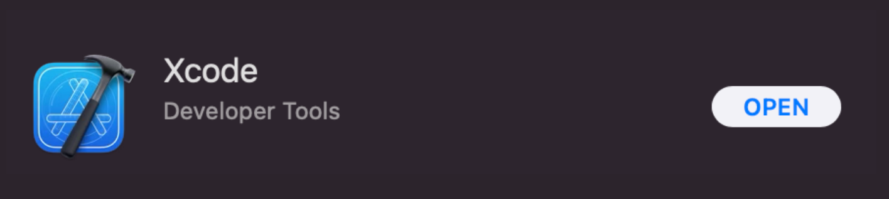
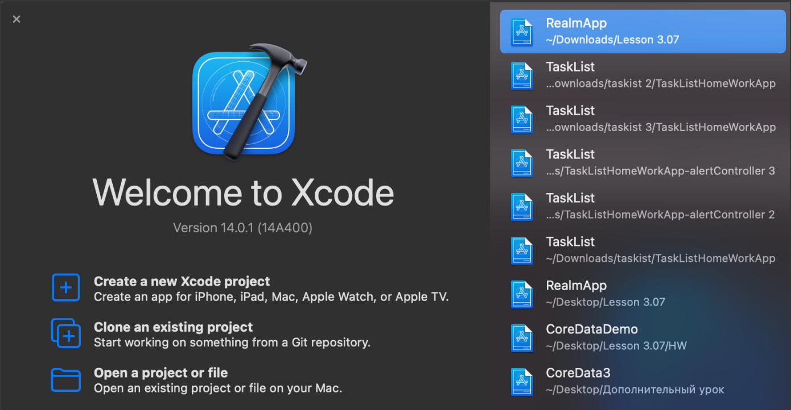
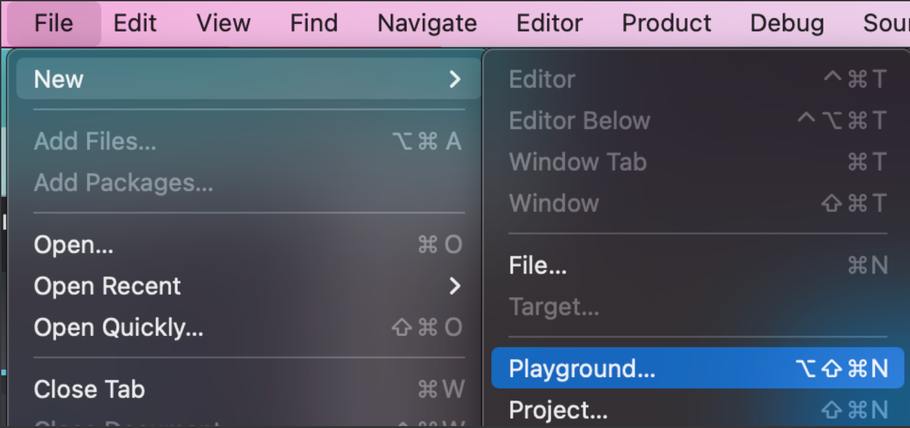
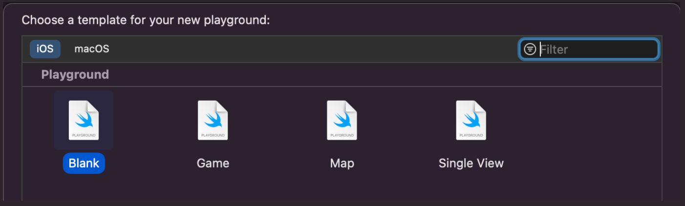
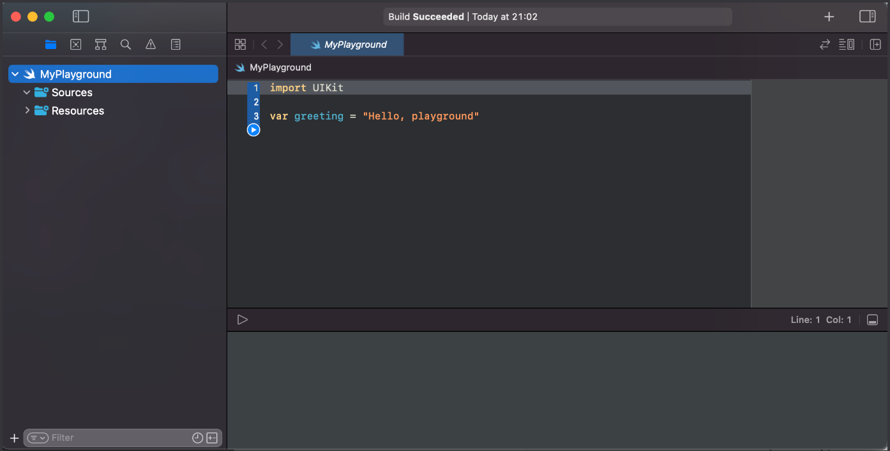
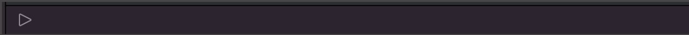
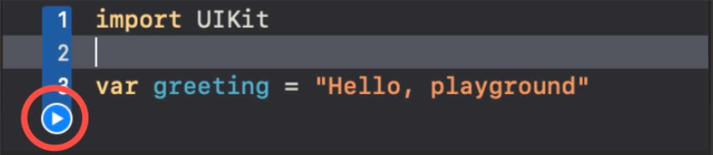

Среда разработки Xcode.
03.03.87
Прежде чем нам погрузится в интересный мир разработки, давайте установим XCode — это интегрированная среда для разработки приложений под операционные системы Apple. С ее помощью можно писать и проверять код, запускать программы, описывать графические интерфейсы и их связь с кодом. В целом это все что нам понадобится на курсе.
Где найти Xcode?
Заходим в AppStore, и находим там нужное нам приложение:
После установки Xcode вы увидите окно приветствия:
через данное окно можно создать новый проект или открыть уже существующий. Но на первом блоке обучения нам это пока не понадобиться. Учиться основам языка мы будем в упрощенной версии Xcode, которая называется Playground.
Как открыть Playground?
У нас откроется следующее окно:
В верхней панели можно выбрать платформу под которую вы планируете разрабатывать приложения. Платформу macOS мы затрагивать с вами не будем.
На вкладке IOS вы можете видеть шаблоны файлов. Это всего лишь шаблоны, так же как если бы вы создавали документ Word, где вам предлагается создать файл с уже готовыми настройками заголовков и таблиц. Здесь все точно так же, и по умолчанию мы будем всегда выбирать Blank, нам нужен чистый файл, без предварительных настроек.
Нажимаем кнопку Next, и далее вам предлагается назвать файл и определить дирректорию где этот файл будет хранится.
После того как вы выполнили все процедуры, откроется сам Playground, так называемая песочница, в которой мы с вами будем тренироваться.
Вы можете заменить что playground по сути является текстовым редактором, который состоит из трех секций. Основное окно предназначено для ввода кода, справа мы будем видеть значения, хранящиеся в свойствах.
Снизу располагается консоль, куда мы будем выводить результаты вычислений и алгоритмов (что бы открыть консоль, просто потяните нижний край вверх, либо комбинацией клавиш: command + shift + Y
Как запустить компилятор?
Что бы запустить компилятор нужно нажать на знак play над консолью в левом углу
Либо на кружок с знаком play в левой части кода:
Весь код, который будет размещаться выше данной кнопки, будет выполнен.
После запускам, мы увидим изменения только в правой панели, на консоли же будет пусто, а все потому что мы еще не познакомились с вами с одним очень полезным методом, который может отображать данные на консоли, но об этом уже в следующем уроке.